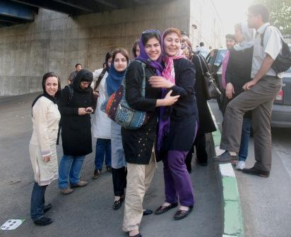
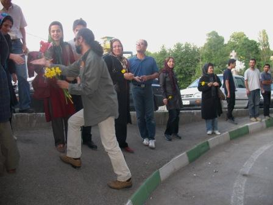
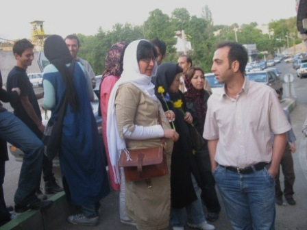
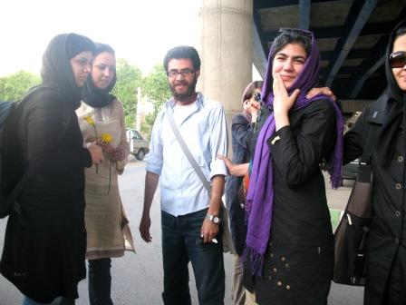
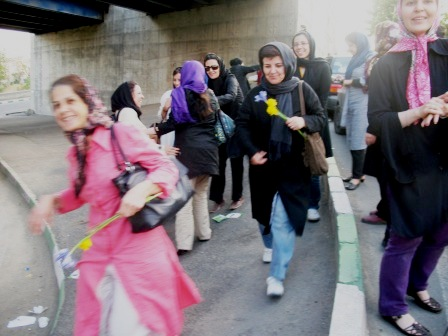
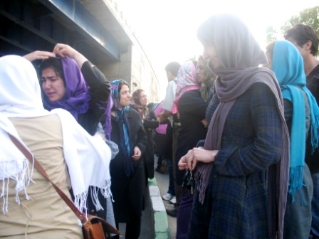
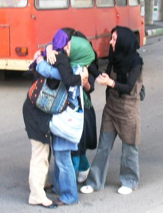

|
|

به جز جلوه جواهری سایر زنان بازداشت شده در روز کارگر آزاد شدند
يكشنبه27 اردیبهشت 1388
تغییر برای برابری - به جز جلوه جواهری، سایر زنان بازداشت شده در مراسم روز جهانی کارگر آزاد شدند.
با گذشت 17 روز از بازداشت شرکت کنندگان در مراسم روز جهانی کارگر، درحالی که از ساعت 3 بعد از ظهر امروز، بیست و هفتم اردی بهشت، خانواده های زنان زندانی در مقابل اوین در انتظار آزادی عزیزان شان بودند پس از سه ساعت تعدادی متوجه شدند که زنان را با یک دستگاه مینی بوس از اوین خارج می کنند. این در حالی بود که دقایقی بعد تعدادی از آزاد شدگان خبر دادند که مقابل زندان اوین منتظر خانواده های خود هستند و سرانجام پس از مدتی سایرین را در میدان کاج سعادت آباد از مینی بوس پیاده کردند.
جلوه جواهری که در مراسم روز جهانی کارگر هم حضور نداشت و در منزل خود دستگیر شده است همچنان در زندان اوین به سر می برد و مسئولان دادگاه انقلاب از دادن هر توضیحی در مورد وضعیت او به خانواده اش خودداری کرده اند.
در حالی که بنا بر وعده ی مسئولان دادگاه انقلاب قرار بود 35 نفر از بازداشت شدگان روز کارگر با ارائه فیش حقوقی و تودیع کفالت آزاد شوند، صبح امروز فیش کفالت مردان بازداشت شده پذیرفته نشد و به خانواده ها گفته شد که صبح فردا برای پیگیری وضعیت آنان مراجعه کنند. به برخی دیگر هم مطابق معمول گفته شد: "خودمان خبر می دهیم". اکثر مردان بازداشت شده تا کنون موفق به تماس تلفنی و یا دیدار با خانواده های خود نشده اند و مسئولان دادگاه انقلاب نیز با ذکر این نکته که پرونده ی آنان در مرحله ی تحقیقات است از دادن هر گونه توضیح به خانواده هایشان خود داری می کنند.
گفتنی است کلیه زنان آزاد شده صبح فردا باید جهت رسیدگی به پرونده ی خود به دادگاه انقلاب مراجعه کنند.







مرتبط
از خانواده 35 نفر از بازداشتی ها فیش حقوقی خواسته اند
آزادی پنج تن از فعالان بازداشتی زن در روز کارگر
اقدامات خانواده ها و پاسخ های مسئولان / خانواده ها: دیگر سکوت نمی کنیم
بازجویی از زنان بازداشتی در بند 209
زنان به سالن متادون منتقل شده اند، مردان هنوز تماسی نگرفته اند
کمپین بین المللی حقوق بشر: همه فعالان بازداشت شده در اول ماه می را آزاد کنید!
بازداشتی های روز جهانی کارگر ممنوع الملاقات هستند
آخرین خبرها از وضعیت بازداشتی های بند 240 اوین و تلاش خانواده هایشان
خانواده های بازداشت شدگان:می گویند بروید به خانه هایتان خودمان خبر می دهیم
مادر جلوه جواهری: ماموران همچنان در خانه هستند و کلید را هم نداده اند!
بازداشت گسترده فعالین کارگری و اعضای کمپین یک میلیون امضا در مراسم روز جهانی کارگر
دادگاه انقلاب در مورد وضعيت بازداشت شدگان وکلا و خانواده ها را بي جواب گذاشت
سرکوب و دستگیری گسترده فعالان کارگری در پارک لاله تهران
ادامه خشونت در روز کارگر؛ بازداشت جلوه جواهری و تفتیش شبانه ی منزل برخی از اعضای کمپین
گردهمایی روز جهانی کارگر به خشونت کشیده شد: بازداشت حدود 150 نفر از مردم و فعالان کارگری و اجتماعی